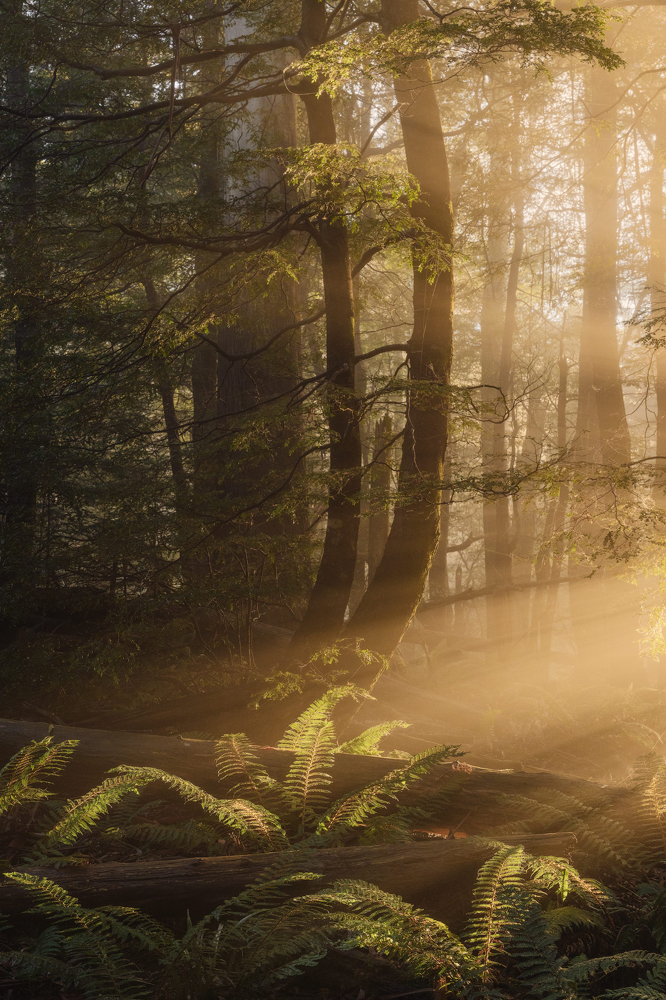
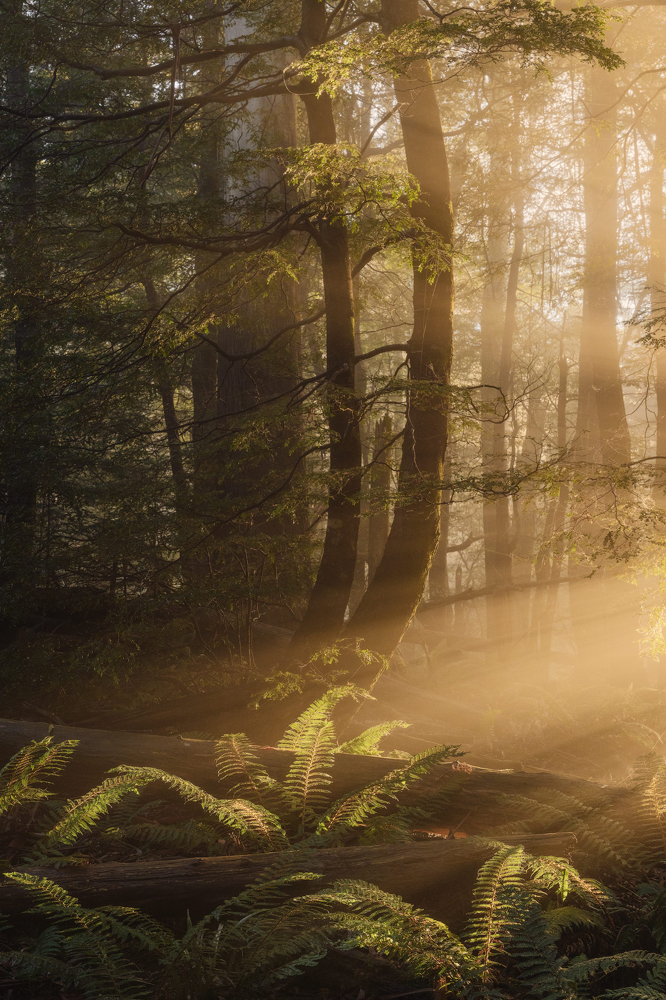
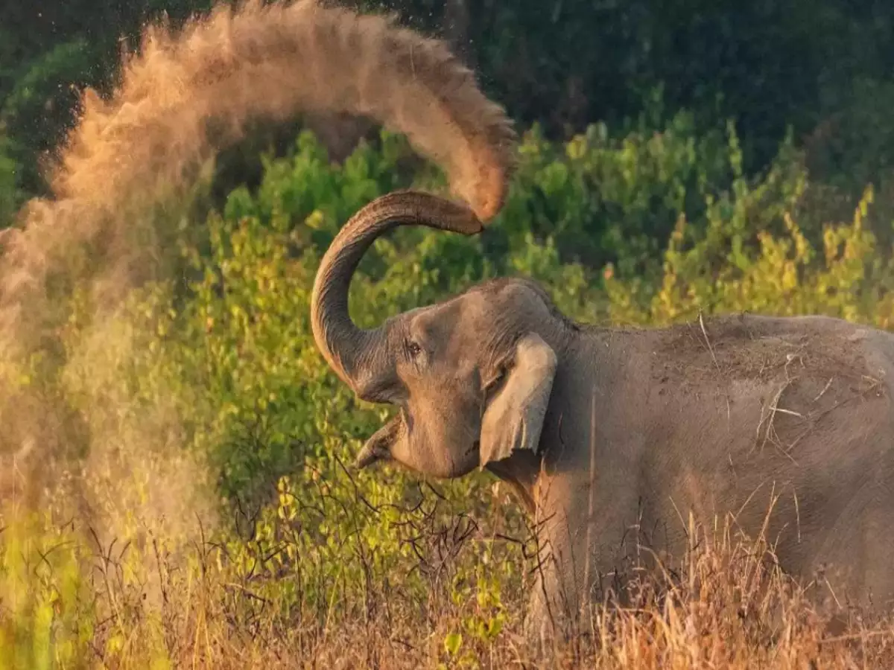
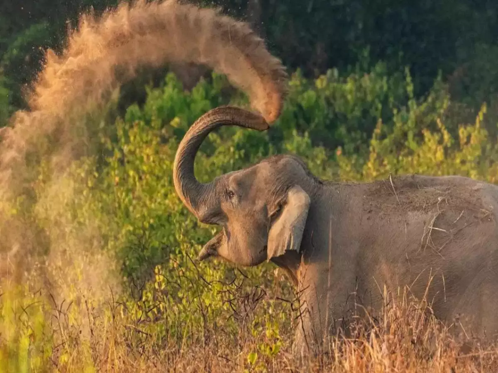

Welcome to our Photography Website!
Here we showcase our latest photography work and offer various courses to enhance your skills.
See our PortfolioPortfolio
 


Nature Photography
Description
Nature photography is a wide range of photography taken outdoors and devoted to displaying natural elements such as landscapes, wildlife, plants, and close-ups of natural scenes and textures. Nature photography tends to put a stronger emphasis on the aesthetic value of the photo than other photography genres, such as photojournalism and documentary.
"Nature photography" overlaps the fields of—and is sometimes considered an overarching category including -- "wildlife photography," "landscape photography," and "garden photography".

 

Wild-Life Photography
Description
Wildlife photographers use many different types of equipment to aid them in their quest to photograph their various subjects. The type of equipment needed by the photographer depends on what kind of animal he is shooting, what it will be doing, when it will be out, and the type of environment in which it lives. There are many different cameras, films, and other equipment to be used when photographing various subjects. Photographers sometimes use aerial photography and underwater photography to get pictures of some species. Wildlife photographing can be as easy as a walk in the park or as dangerous as swimming with sharks
Contact Us
Courses
Course 1
BA HONS DEGREE IN PHOTOGRAPHY
Awarded by JNAFAU 3-Year Duration Eligibility: 10+2 5 Semesters Our Photography courses prepare you to become a: E- Commerce Photographer, Commercial Photographer, Advertising Photographer, Fashion Photographer, Portrait Photographer, Event Photographer, Photojournalist, Wedding Photographer, WildLife Photographer, Food Photographer, Travel Photographer, Fine Art Photographer, Architectural Photographer, Freelance Photographer, EntrepreneurCourse 2
Photography Basics and Beyond: From Smartphone to DSLR Specialization
Whether your camera is a Smartphone or DSLR, a Compact or Mirrorless model, you will learn to gain control of exposure and understand fundamentals of composition, while exploring documentary and creative concepts to make the kinds of photographs you have always wanted. This Specialization covers a broad range of fundamental principles in photography, from camera control to principles of composition and creativity, providing you with a foundation for growth in making photographs you’ll be proud to share. In the Capstone you will develop a final project of photographs related to your individual needs, whether practical or purely expressive, and share ongoing feedback with fellow learners. In addition to the awarding of a Certificate of Specialization from Michigan State University, each Learner who subscribes to and completes the entire Specialization, including Capstone, will receive substantial discounts on equipment, accessories, and membership benefits through Industry Partners from among the premier manufacturers of photography equipment: Fracture, Gary Fong, Gyst, Lensbaby, LensPen, Lume Cube, Photo District News, PhotoVideoEdu.com, Pixsy, and Think Tank.Course 3
Cameras, Exposure, and Photography
Welcome to Course One of Photography Basics and Beyond: From Smartphone to DSLR! In these first 4 Modules you will gain the knowledge and the confidence that will help you make good choices as you consider qualities of the camera you own, and the qualities of the other types of digital cameras you might be considering. You will learn about the basic functions that most digital cameras have in common. You will also go beyond the "technical" matters and learn about how you can make exciting pictures by emphasizing the aspects of Frame and Vantage Point to interpret old subjects in new ways. Discovering accessories that photographers find useful, and the types of camera bags from mini to carry-on sized, is also in store for you. You will also make your first photographs and, if you are a subscriber to the specialization, upload pictures to the web gallery and start interacting with your fellow learners in our "Gallery." Let's get started with Module One!